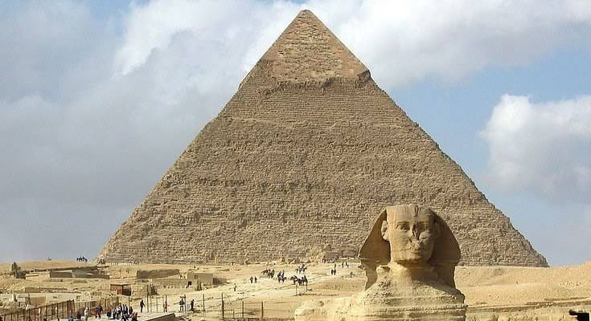
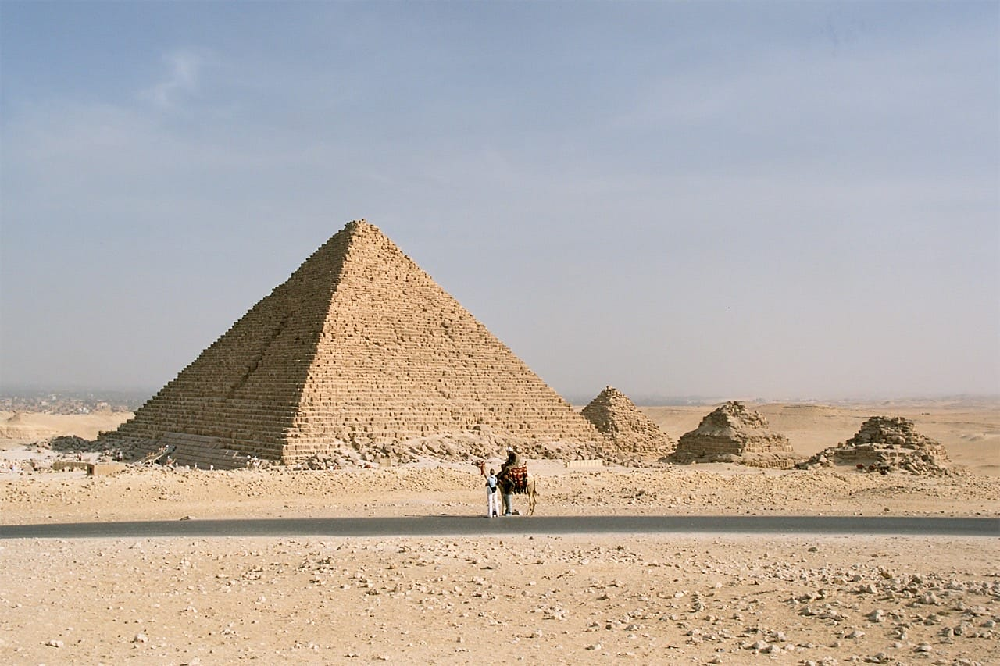
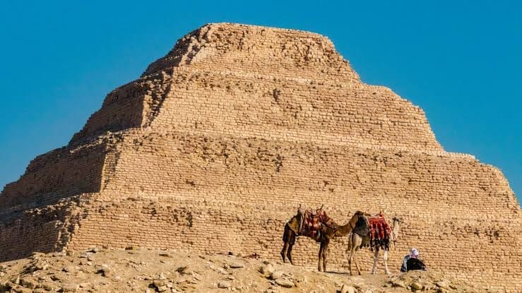
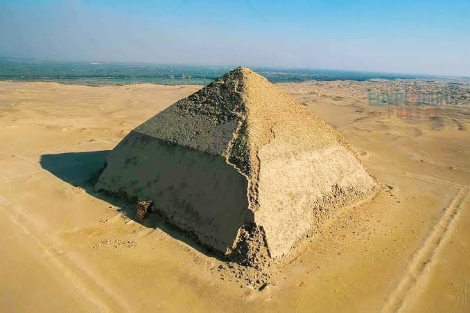

1. พีระมิดคูฟู (Great Pyramid of Giza)
- สร้างโดยฟาโรห์คูฟู (Khufu หรือ Cheops) แห่งราชวงศ์ที่ 4 ประมาณปี 2585-2560 ปีก่อนคริสตกาล
- ก่อสร้างนานราว 20-26 ปี ด้วยแรงงานฝีมือประมาณ 10,000-20,000 คน หลายคนเป็นสมาชิกชุมชนที่ได้รับค่าจ้างและดูแลอย่างดี
- ใช้หินประมาณ 2.3 ล้านก้อน น้ำหนักรวมกว่า 6 ล้านตัน รวมทั้งเกรนิตจาก Aswan มาใช้ในห้องฝังศพ
- สูงดั้งเดิม 146.6 ม. (ปัจจุบัน 138.5 ม. เนื่องจากผิวหินหายไป) ฐานกว้างข้างละ 230 ม.
- ภายในประกอบด้วย 3 ห้องหลัก: ห้องใต้ดิน (unfinished), ห้อง Queen, ห้อง King พร้อมหีบแกรนิตและทางเดินเชื่อม ทางลอดและห้องว่างเปล่า (ขุมทรัพย์ถูกปล้นในอดีต)
- เป็นหนึ่งในเจ็ดสิ่งมหัศจรรย์แห่งโลกโบราณที่ยังคงอยู่ และเคยเป็นอาคารสูงที่สุดในโลกนานกว่า 3,800 ปี
ที่มา: วิกิพีเดีย, Architectural Digest, Encyclopedia Britannica

2. พีระมิดคาเฟร (Pyramid of Khafre)
- สร้างโดยฟาโรห์คาเฟร (Khafre หรือ Chephren) บุตรของคูฟู ช่วงราว 2558-2532 ปีก่อนคริสตกาล
- สูงประมาณ 143 ม. (471 ฟุต) ฐานมีทิศทางและการก่อสร้างเช่นเดียวกับกลุ่มกิซ่า
- ยังมีหินปูนเปลือกขัดมันที่ส่วนยอด ซึ่งเป็นต้นแบบภาพที่เราเห็นในสมัยก่อน
- เชื่อมโยงกับ มหาสฟิงซ์ (Great Sphinx) ที่ตั้งอยู่บริเวณเดียวกัน ซึ่งอาจเป็นการปกป้องทางศาสนาในยุคนั้น
ที่มา: SmartHistory, HISTORY, Encyclopedia Britannica

3. พีระมิดเมนคอเร (Pyramid of Menkaure)
- สร้างโดยฟาโรห์เมนคอเร (Menkaure หรือ Mykerinus) ราวปี 2510 ก่อนคริสตกาล
- ดั้งเดิมสูงประมาณ 65 ม. ฐานขนาด 102x105 ม. ลาดเอียง 51°20'25″
- ขันล่างใช้หินแกรนิตจาก Aswan ส่วนบนใช้หินปูน Tura
- มีพระราชเมรุ (Valley Temple) และพีระมิดย่อยสำหรับราชินี 3 องค์
- มีข้อมูลว่าเมนคอเรน่าจะสิ้นพระชนม์ก่อนพีระมิดสร้างเสร็จ จึงอาจมีโครงสร้างบางส่วนไม่สมบูรณ์
ที่มา: Egypt Time Travel, pyramid-of-giza.com, Encyclopedia Britannica

4. พีระมิดขั้นบันไดของโจเซอร์ (Step Pyramid of Djoser)
- สร้างโดยฟาโรห์โดเซอร์ (Djoser หรือ Netjerikhet) ราชวงศ์ที่ 3 ประมาณปี 2670-2650 ก่อนคริสตกาล
- ออกแบบโดย อิมโฮเทป (Imhotep) นักสถาปัตยกรรมและแพทย์ผู้โด่งดัง
- พัฒนาเริ่มจาก mastaba → ขั้นบันได 4 ขั้น → ต่อเติมเป็น 6 ขั้น สูงประมาณ 60 ม.
- ภายในมีอุโมงค์ฝังศพลึก ~28 ม. และอุโมงค์ยาวรวม ~5-6 กม. ใช้เก็บภาชนะสำหรับพิธีกรรมศพและพระราชวงศ์
- เป็นอาคารหินขนาดใหญ่ที่สุดในยุคนั้น และเป็นต้นแบบพีระมิดสามเหลี่ยม
ที่มา: Study.com, Live Science, วิกิพีเดีย

5. พีระมิดเอียง (Bent Pyramid)
- สร้างโดยฟาโรห์สนีเฟรู (Sneferu) ราชวงศ์ที่ 4 ประมาณ 2600 ก่อนคริสตกาล
- มีความโดดเด่นด้วยการเปลี่ยนมุมลาดเอียงจาก 54° ที่ฐาน เป็น 43° ที่ช่วงบน ทำให้ดู “เอียง”
- สูงประมาณ 101 ม. โครงสร้างยังคงที่ดีมากเมื่อเทียบกับพีระมิดอื่น
- ถือเป็นต้นแบบการเปลี่ยนผ่านจากพีระมิดขั้นบันไดไปสู่ทรงสามเหลี่ยมเรียบ
- พีระมิดที่ Meidum ซึ่งอยู่ใกล้กัน อาจเป็นอีกขั้นของการทดลองรูปทรงของ Sneferu
ที่มา: Smithsonian, Architectural Digest, วิกิพีเดีย